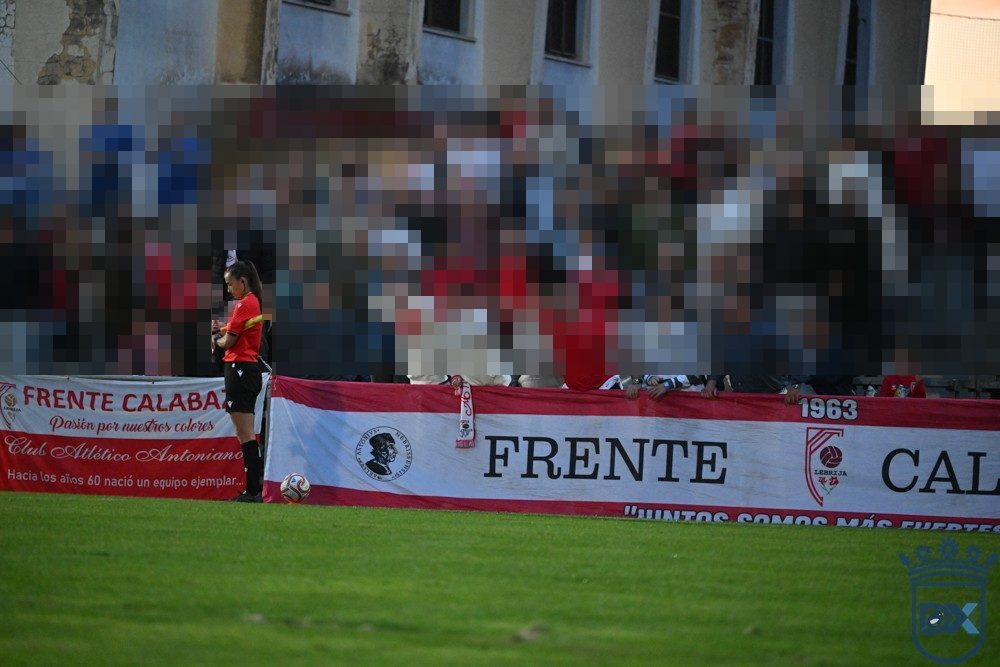

Sexist abuse at the Pedro Garrido

Photo: Diario XerecistaWhat was shouted at the assistant referee during Xerez CD - Antoniano cannot be left as a footnote to the match. It is a disgrace, and football cannot keep looking the other way.
Xerez beat Antoniano 2-0 last Sunday at the Pedro Garrido, but something happened that afternoon that does not appear on the scoreboard and should not be forgotten. From the away supporters' area, one of the assistant referees had to listen to sexist abuse: "go and do the ironing", "bitch" and "daughter of a bitch" were some of the insults.
It was a minority, and a whole set of supporters cannot be blamed for it. Antoniano's fans are, generally speaking, a classy crowd who back their team with respect. That is precisely why it is all the more striking that, with women in that very stand, nobody said anything to those who were hurling the insults.
Why was the match not stopped?
It is hard to understand how the game carried on as if nothing had happened. If I heard those insults from the stands, she heard them. And if she heard them, the refereeing team could have heard them too. Nobody should have to put up with something like that while doing their job.
For racism, rightly, a match is stopped: it happened at Mestalla in 2023, when the referee halted Valencia-Real Madrid over the racist abuse aimed at Vinícius. For sexism, no. There is no explanation for that difference. An insult that humiliates someone for being a woman is just as unacceptable as one that humiliates them for the colour of their skin, and it should be treated the same way.
In the 21st century
It is a real disgrace that in the 21st century these insults can still be heard at a football ground. Whoever shouts "go and do the ironing" at a woman who is refereeing says far more about himself than about her. They are probably people with complexes, who can only find a way to feel superior to someone through insults. Let us hope they do not have daughters, because if they do, we know what they will learn at home.
Football, and our stands too, must be a place where any woman can be, cheer or referee without having to put up with this. It cannot be tolerated.
🇪🇸 Leer en español ← Back to home